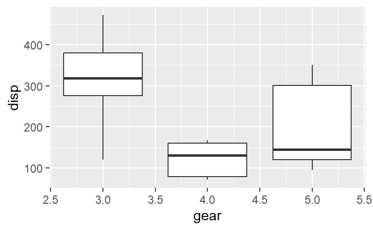
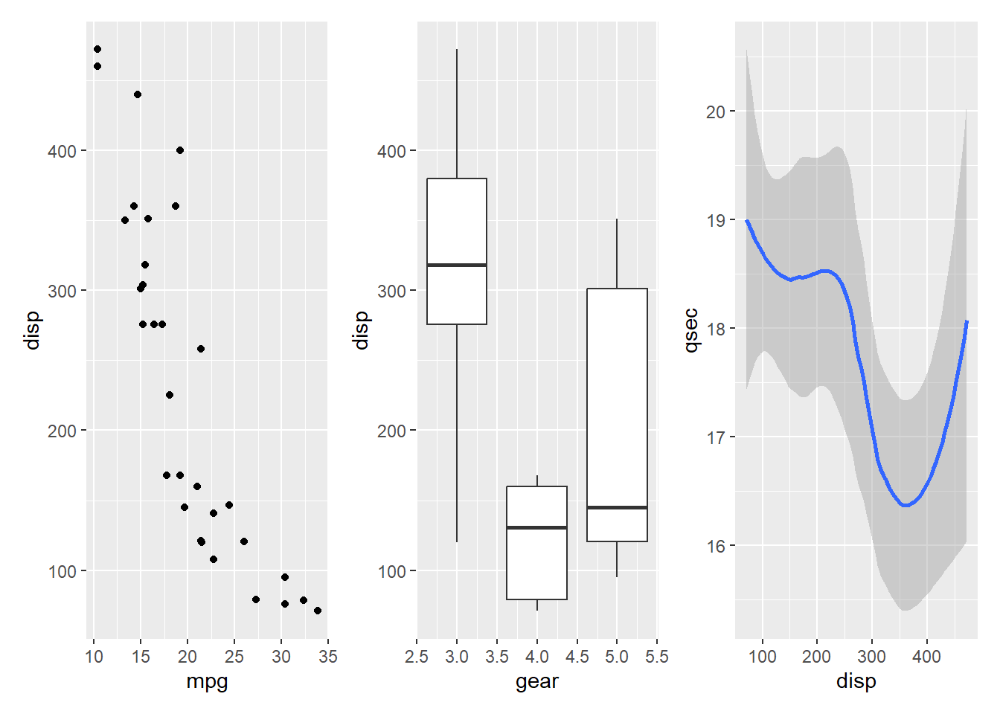
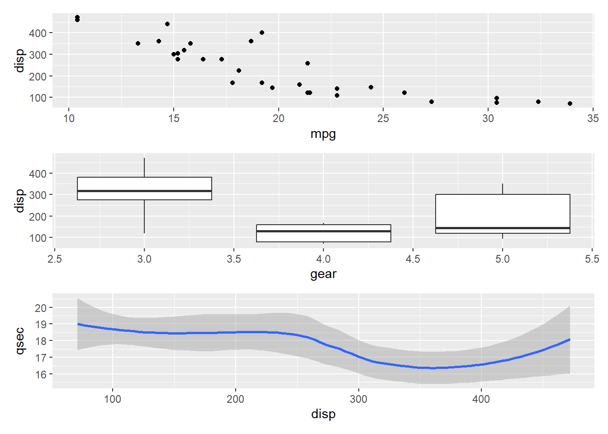
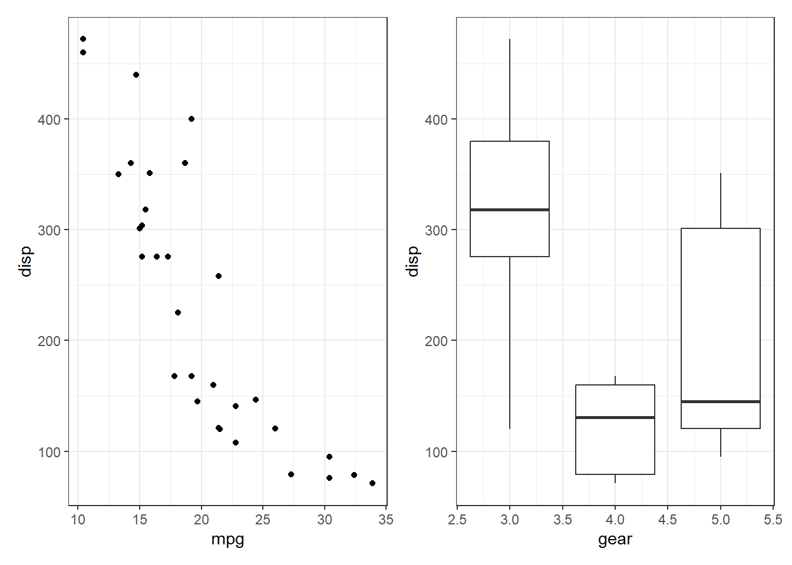

Introduction
In this worksheet, we will discuss how to combine several ggplot2 plots into one compound figure.
We will be using the R package tidyverse, which
includes ggplot() and related functions. We will also be
using the package patchwork for plot composition.
```{r library-calls}
# load required library
library(tidyverse)
library(patchwork)
```
We will be working with the dataset mtcars, which
contains fuel consumption and 10 aspects of automobile design and
performance for 32 automobiles (1973–74 models).
```{r mtcars}
mtcars
```
mtcars mpg cyl disp hp drat wt qsec vs am gear carb
Mazda RX4 21.0 6 160.0 110 3.90 2.620 16.46 0 1 4 4
Mazda RX4 Wag 21.0 6 160.0 110 3.90 2.875 17.02 0 1 4 4
Datsun 710 22.8 4 108.0 93 3.85 2.320 18.61 1 1 4 1
Hornet 4 Drive 21.4 6 258.0 110 3.08 3.215 19.44 1 0 3 1
Hornet Sportabout 18.7 8 360.0 175 3.15 3.440 17.02 0 0 3 2
Valiant 18.1 6 225.0 105 2.76 3.460 20.22 1 0 3 1
Duster 360 14.3 8 360.0 245 3.21 3.570 15.84 0 0 3 4
Merc 240D 24.4 4 146.7 62 3.69 3.190 20.00 1 0 4 2
Merc 230 22.8 4 140.8 95 3.92 3.150 22.90 1 0 4 2
Merc 280 19.2 6 167.6 123 3.92 3.440 18.30 1 0 4 4
Merc 280C 17.8 6 167.6 123 3.92 3.440 18.90 1 0 4 4
Merc 450SE 16.4 8 275.8 180 3.07 4.070 17.40 0 0 3 3
Merc 450SL 17.3 8 275.8 180 3.07 3.730 17.60 0 0 3 3
Merc 450SLC 15.2 8 275.8 180 3.07 3.780 18.00 0 0 3 3
Cadillac Fleetwood 10.4 8 472.0 205 2.93 5.250 17.98 0 0 3 4
Lincoln Continental 10.4 8 460.0 215 3.00 5.424 17.82 0 0 3 4
Chrysler Imperial 14.7 8 440.0 230 3.23 5.345 17.42 0 0 3 4
Fiat 128 32.4 4 78.7 66 4.08 2.200 19.47 1 1 4 1
Honda Civic 30.4 4 75.7 52 4.93 1.615 18.52 1 1 4 2
Toyota Corolla 33.9 4 71.1 65 4.22 1.835 19.90 1 1 4 1
Toyota Corona 21.5 4 120.1 97 3.70 2.465 20.01 1 0 3 1
Dodge Challenger 15.5 8 318.0 150 2.76 3.520 16.87 0 0 3 2
AMC Javelin 15.2 8 304.0 150 3.15 3.435 17.30 0 0 3 2
Camaro Z28 13.3 8 350.0 245 3.73 3.840 15.41 0 0 3 4
Pontiac Firebird 19.2 8 400.0 175 3.08 3.845 17.05 0 0 3 2
Fiat X1-9 27.3 4 79.0 66 4.08 1.935 18.90 1 1 4 1
Porsche 914-2 26.0 4 120.3 91 4.43 2.140 16.70 0 1 5 2
Lotus Europa 30.4 4 95.1 113 3.77 1.513 16.90 1 1 5 2
Ford Pantera L 15.8 8 351.0 264 4.22 3.170 14.50 0 1 5 4
Ferrari Dino 19.7 6 145.0 175 3.62 2.770 15.50 0 1 5 6
Maserati Bora 15.0 8 301.0 335 3.54 3.570 14.60 0 1 5 8
Volvo 142E 21.4 4 121.0 109 4.11 2.780 18.60 1 1 4 2Combining plots
First we set up four different plots that we will subsequently
combine. The plots are stored in variables p1,
p2, p3, p4.
```{r singlet-plots, fig.width = 4, fig.height = 0.618*4}
p1 <- ggplot(mtcars) +
geom_point(aes(mpg, disp))
p1
p2 <- ggplot(mtcars) +
geom_boxplot(aes(gear, disp, group = gear))
p2
p3 <- ggplot(mtcars) +
geom_smooth(aes(disp, qsec))
p3
p4 <- ggplot(mtcars) +
geom_bar(aes(carb))
p4
```

To show plots side-by-side, we use the operator |, as in
p1 | p2. Try this by making a compound plot of plots
p1, p2, p3 side-by-side.
```{r plots-side-by-side}
# build all the code for this exercise
# solution
p1 | p2 | p3
```

To show plots on top of one-another, we use the operator /,
as in p1 / p2. Try this by making a compound plot of plots
p1, p2, p3 on top of each
other.
```{r plots-on-top}
# build all the code for this exercise
p1 / p2 / p3
```

We can also use parentheses to group plots with respect to the operators
| and /. For example, we can place several
plots side-by-side and then place this entire row of plots on top of
another plot. Try putting p1, p2,
p3, on the top row, and p4 on the bottom
row.
```{r plots-complex}
(___) / ___
# solution
(p1 | p2 | p3 ) / p4
```
Plot annotations
The patchwork package provides a powerful annotation
system via the plot_annotation() function that can be added
to a plot assembly. For example, we can add plot tags (the labels in the
upper left corner identifying the plots) via the plot annotation
tag_levels. You can set tag_levels = "A" to
generate tags A, B, C, etc. Try this out.
```{r plots-w-tags}
(p1 | p2 | p3 ) / p4
# solution
(p1 | p2 | p3 ) / p4 +
plot_annotation(
tag_levels = "A"
)
```
Try also tag levels such as "a", "i", or
"1".
You can also add elements such as titles, subtitles, and captions, by
setting the title, subtitle, or
caption argument in plot_annotation(). Try
this out by adding an overall title to the figure from the previous
exercise.
```{r plots-w-title}
# build all the code for this exercise
# solution
(p1 | p2 | p3 ) / p4 +
plot_annotation(
tag_levels = "A",
title = "Various observations about old cars"
)
```
Also set a subtitle and a caption.
Finally, you can change the theme of all plots in the plot assembly
via the & operator, as in
(p1 | p2) & theme_bw(). Try this out.
```{r themeing}
# build all the code for this exercise
# solution
(p1 | p2) & theme_bw()
```

What happens if you write this expression without parentheses? Do you understand why?
(Big) Challenge Problem:
If you have time this morning, or if you want to work on it this
afternoon, try analyzing a new dataset to test your R skills. First,
learn what the columns mean, what missing values you see, and then start
to ask questions about patterns in the data by making plots.
You can browse the datasets at https://github.com/rfordatascience/tidytuesday/tree/master/data
(click on a year folder and go to the README to read about the
datasets). Or pick from one of the ones below:
```{r challenge-dataset}
# fish consumption in different countries
consumption <- readr::read_csv('https://raw.githubusercontent.com/rfordatascience/tidytuesday/master/data/2021/2021-10-12/fish-and-seafood-consumption-per-capita.csv')
# world cup Cricket matches from 1996 to 2005
matches <- readr::read_csv('https://raw.githubusercontent.com/rfordatascience/tidytuesday/master/data/2021/2021-11-30/matches.csv')
# malaria deaths by age across the world and time.
malaria_deaths<- reader::read_csv('https://github.com/rfordatascience/tidytuesday/blob/master/data/2018/2018-11-13/malaria_deaths_age.csv")
#meteorites and/or volcanos:
# note to plot a map, try the following:
countries_map <-map_data("world")
world_map<-ggplot() +
geom_map(data = countries_map,
map = countries_map,aes(x = long, y = lat, map_id = region, group = group),
fill = "white", color = "black", size = 0.1) # then add geom_point() to this map to add lat/long points
meteorites <- readr::read_csv("https://raw.githubusercontent.com/rfordatascience/tidytuesday/master/data/2019/2019-06-11/meteorites.csv")
volcano <- readr::read_csv("https://raw.githubusercontent.com/rfordatascience/tidytuesday/master/data/2020/2020-05-12/volcano.csv")
# or pick any dataset from https://github.com/rfordatascience/tidytuesday/tree/master/data ,
# just click on a year folder and go to the README to read about the datasets
# if you have trouble loading a dataset there, ask for help!
```